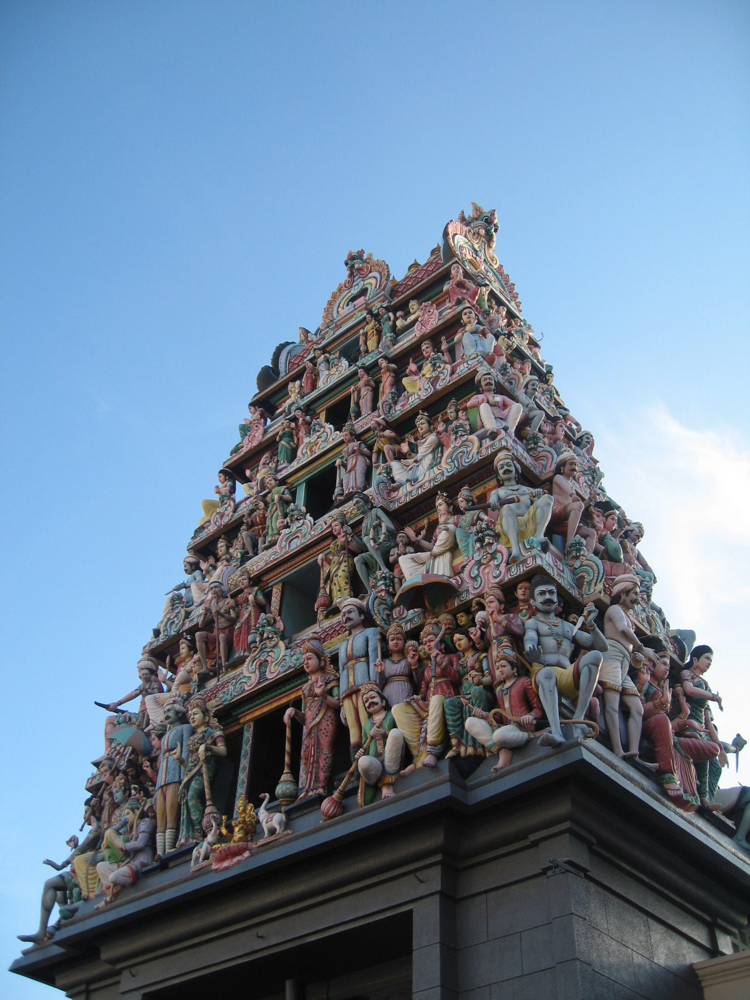
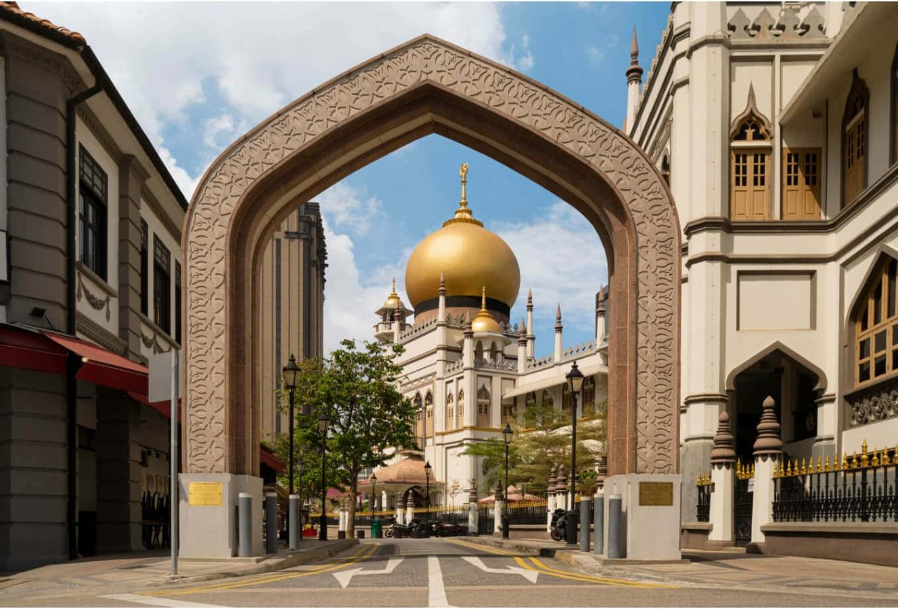

Sri Mariamman Temple
A Hindu temple in Chinatown. The entrance tower is detailed, so it is worth stopping outside before going in.
Culture & Heritage
Singapore's religious buildings are not hidden away from daily life. Many of them sit beside MRT stations, offices, food streets, and older shophouses, which makes them useful for understanding the city beyond tourist photos.

A Hindu temple in Chinatown. The entrance tower is detailed, so it is worth stopping outside before going in.

One of the most recognisable landmarks in Kampong Gelam, especially because of the golden dome and the open space around it.

A historic Chinese temple near Telok Ayer. It feels interesting because it sits close to the modern CBD.
A white cathedral near City Hall. The building stands out because the area around it is busy and very urban.
Wear something comfortable and respectful. Some places may have rules for shoes, photography, or quiet areas, so check the signs before entering.
These are active religious places, not just photo spots. Visit calmly and follow the posted rules.